~6 Creating the Main Hero Object~
2/16/2026
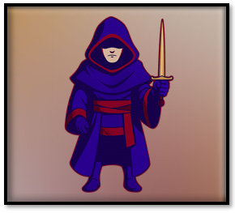
Another Angle for the Hero
Ok, we started out with our right and left facing hero. But now since we will be going at the hero character a bit differently, we need a front facing character too. Why? Because, our left and right facing hero will be brought in using the arrow keys only. And that means when we enter our room, we do not see the hero at all. So, we need to create a front facing hero. This will be what will be shown to the player when the hero is at rest, or just standing inside of a room.
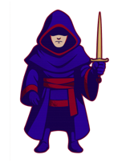
So, go into Photoshop, and throw this guy into a canvas with the dimensions of 64 x 64.
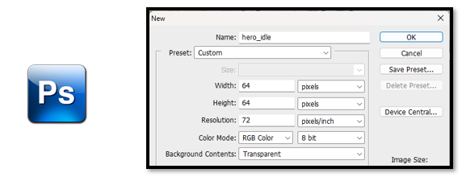
Drag in and resize your hero
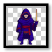
Now save him to the sprite folder in side of Game Maker, but remember until you actually officially bring the sprite in as a sprite, he will not be recognized in the game. Game Maker does its own thing to your sprite.
C:\Users\Your_User_Name\GameMakerProjects\My First Game
Drag him into your sprite folder in the game folder.
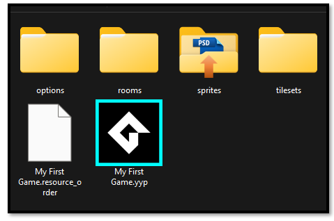
Asset Browser- Sprites -Create-Sprite
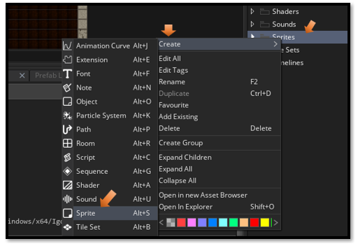Name him and import the sprite
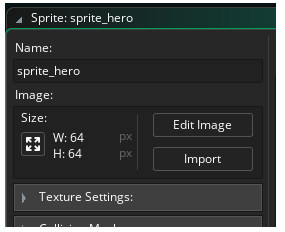We put a red stroke around him so he can be seen better.
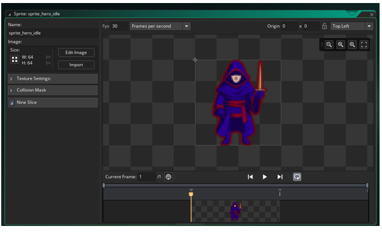Creating the Object
Ok, this time we will actually be creating an object for this guy, and we will physically throw this poor fella into the room.
So, create the object for the front facing guy. You know the drill. Just right click on the Object folder and create the object. Just remember to give the object the face of our front facing sprite.
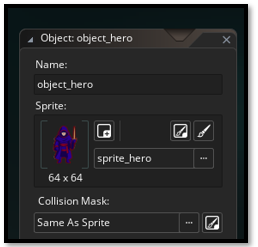
Step event inside of the hero
Here we are starting to code. Make sure you have clicked on the object_hero, you will be having all of your code for the hero inside of this guy.
Click on Add Event.
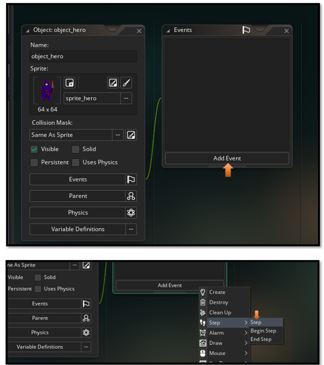
Here it will ask you how you want to code. Choose the first option, GML Code. Click OK.
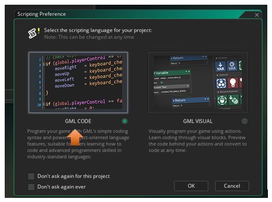// Movement input
var move = keyboard_check(vk_right) - keyboard_check(vk_left);
// Apply movement
x += move * 4; // Adjust speed as needed
// Sprite switching logic
if (move > 0) {
sprite_index = sprite_hero_right;
} else if (move < 0) {
sprite_index = sprite_hero_left;
} else {
sprite_index = sprite_hero;
}
The Room
Now go to the room tab. This will switch you to the room.
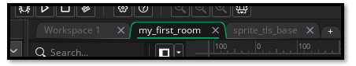Now throw this guy into the room.
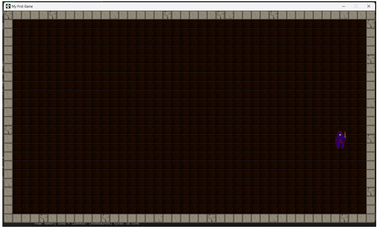You can now hit the left and right arrow keys and the guy will travel left and right. But when he stops he always faces forward.
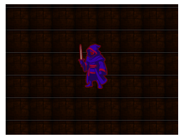
Creating the Back Image of the hero
Before we can have him 4 directional we need to also create the back of the hero. I just mirrored him in Photoshop, and threw the red sash around the back of him, and a red painted line for the edges of his head scarf.
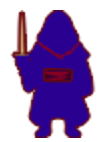
I saved him to my Game Maker sprite folder so that I could pull him into the game through the sprite folder in the Asset Browser.
C:\Users\Your_User_Name\GameMakerProjects\My First Game\sprites
Right click on the Sprite folder in the Asset Browser and pull this back image in.

Updated Step Code for the object_hero
This code will allow for 4 directional movement of our hero. It will also allow the hero to glide along the walls, without getting stuck, which can be a problem in Game Makers mazes.
// Movement input
var move_x = keyboard_check(vk_right) - keyboard_check(vk_left);
var move_y = keyboard_check(vk_down) - keyboard_check(vk_up);
var spd = 4;
var dx = move_x * spd;
var dy = move_y * spd;
// --- Attempt full diagonal move first ---
if (dx != 0 || dy != 0) {
var nx_left = bbox_left + dx;
var nx_right = bbox_right + dx;
var ny_top = bbox_top + dy;
var ny_bottom = bbox_bottom+ dy;
var hit_diag =
wall_is_solid(nx_left, ny_top) ||
wall_is_solid(nx_right, ny_top) ||
wall_is_solid(nx_left, ny_bottom) ||
wall_is_solid(nx_right, ny_bottom);
if (!hit_diag) {
// Move freely if no diagonal collision
x += dx;
y += dy;
} else {
// --- If diagonal blocked, try X only ---
var hit_x =
wall_is_solid(bbox_left+dx, bbox_top) ||
wall_is_solid(bbox_right+dx, bbox_top) ||
wall_is_solid(bbox_left+dx, bbox_bottom) ||
wall_is_solid(bbox_right+dx, bbox_bottom);
if (!hit_x) {
x += dx;
}
// --- Then try Y only ---
var hit_y =
wall_is_solid(bbox_left, bbox_top+dy) ||
wall_is_solid(bbox_right, bbox_top+dy) ||
wall_is_solid(bbox_left, bbox_bottom+dy) ||
wall_is_solid(bbox_right, bbox_bottom+dy);
if (!hit_y) {
y += dy;
}
}
}
// --- Sprite switching ---
if (move_y < 0) sprite_index = sprite_hero_back;
else if (move_x > 0) sprite_index = sprite_hero_right;
else if (move_x < 0) sprite_index = sprite_hero_left;
else sprite_index = sprite_hero;
Testing The Arrow Keys
To test the arrow keys to see if they work. You must first shut down the game if it is running and restart it again for the code to register in with the game. Now press all 4 arrow keys to make sure that the character is switching correctly.
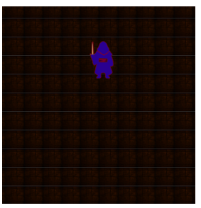
So, now you have your character walking in all four directions in the room.